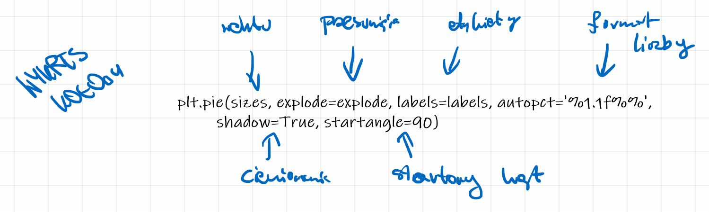
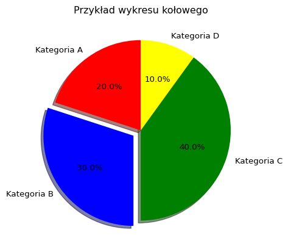
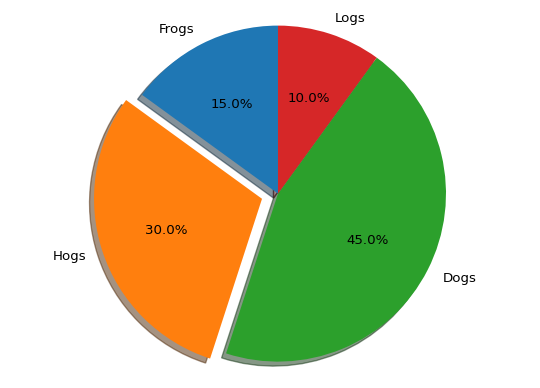
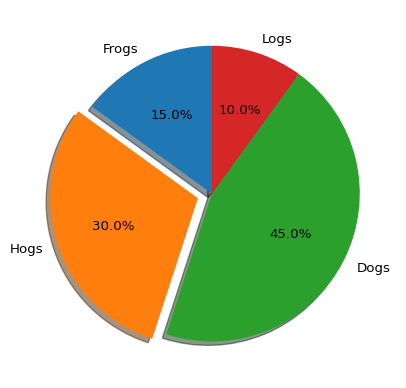

import matplotlib.pyplot as plt
# Dane
sizes = [20, 30, 40, 10]
labels = ['Kategoria A', 'Kategoria B', 'Kategoria C', 'Kategoria D']
colors = ['red', 'blue', 'green', 'yellow']
explode = (0, 0.1, 0, 0) # Wyróżnienie segmentu Kategoria B
# Tworzenie wykresu kołowego
plt.pie(sizes, explode=explode, labels=labels, colors=colors, autopct='%1.1f%%', shadow=True, startangle=90)
# Dodanie tytułu
plt.title('Przykład wykresu kołowego')
# Równomierne skalowanie osi X i Y, aby koło było okrągłe
plt.axis('equal')
plt.show()31 Matplotlib - wykres kołowy
Wykres kołowy (pie chart) jest stosowany, gdy chcemy przedstawić proporcje różnych kategorii lub segmentów w stosunku do całości. Jest szczególnie użyteczny, gdy mamy niewielką liczbę kategorii (zazwyczaj nie więcej niż 5-7) oraz gdy dane są jakościowe (kategoryczne). Wykres kołowy pozwala na wizualne zrozumienie udziałów procentowych poszczególnych kategorii w ramach całego zbioru danych.
Przykłady danych, dla których stosuje się wykres kołowy:
- Struktura wydatków domowych, gdzie kategorie to: mieszkanie, jedzenie, transport, rozrywka, inne.
- Procentowy udział w rynku różnych firm w danej branży.
- Rozkład głosów na partie polityczne w wyborach.
- Procentowy udział różnych rodzajów energii w produkcji energii elektrycznej (węgiel, gaz, energia odnawialna, energia jądrowa itp.).
Chociaż wykresy kołowe mają swoje zastosowania, są również krytykowane za ograniczoną precyzję w ocenie proporcji. Dlatego często zaleca się stosowanie innych rodzajów wykresów, takich jak słupkowe (bar chart) czy stosunkowe (stacked bar chart), które mogą być bardziej przejrzyste i precyzyjne w porównywaniu wartości między kategoriami.
Funkcja pie służy do tworzenia wykresów kołowych. Pozwala na wizualne przedstawienie proporcji różnych segmentów względem całości.
Składnia funkcji to plt.pie(x, explode=None, labels=None, colors=None, autopct=None, shadow=False, startangle=0, counterclock=True), gdzie:
x- lista wartości numerycznych, reprezentująca dane dla każdego segmentu. Funkcjapieautomatycznie obliczy procentowe udziały każdej wartości względem sumy wszystkich wartości.explode- lista wartości, które określają, czy (i jak bardzo) każdy segment ma być oddzielony od środka wykresu. Wartość 0 oznacza brak oddzielenia, a wartości większe oznaczają większe oddzielenie.labels- lista ciągów znaków, które będą używane jako etykiety segmentów.colors- lista kolorów dla poszczególnych segmentów.autopct- formatowanie procentów, które mają być wyświetlane na wykresie (np.'%1.1f%%').shadow- wartość logiczna (True/False), która określa, czy wykres ma mieć cień. Domyślnie ustawione naFalse.startangle- kąt początkowy wykresu kołowego, mierzony w stopniach przeciwnie do ruchu wskazówek zegara od osi X.counterclock- wartość logiczna (True/False), która określa, czy segmenty mają być rysowane zgodnie z ruchem wskazówek zegara. Domyślnie ustawione naTrue.

import matplotlib.pyplot as plt
sizes = [20, 30, 40, 10]
labels = ['Kategoria A', 'Kategoria B', 'Kategoria C', 'Kategoria D']
colors = ['red', 'blue', 'green', 'yellow']
explode = (0, 0.1, 0, 0)
fig, ax = plt.subplots()
ax.pie(sizes, explode=explode, labels=labels, colors=colors, autopct='%1.1f%%', shadow=True, startangle=90)
ax.set_title('Przykład wykresu kołowego')
ax.set_aspect('equal')
plt.show()
import matplotlib.pyplot as plt
# Pie chart, where the slices will be ordered and plotted counter-clockwise:
labels = ['Frogs', 'Hogs', 'Dogs', 'Logs']
sizes = [15, 30, 45, 10]
explode = [0, 0.1, 0, 0] # only "explode" the 2nd slice (i.e. 'Hogs')
plt.pie(sizes, explode=explode, labels=labels, autopct='%1.1f%%',
shadow=True, startangle=90)
plt.axis('equal')
plt.show()
import matplotlib.pyplot as plt
labels = ['Frogs', 'Hogs', 'Dogs', 'Logs']
sizes = [15, 30, 45, 10]
explode = [0, 0.1, 0, 0]
fig, ax = plt.subplots()
ax.pie(sizes, explode=explode, labels=labels, autopct='%1.1f%%', shadow=True, startangle=90)
ax.set_aspect('equal')
plt.show()
1import matplotlib.pyplot as plt
2kategorie = ['Czynsz', 'Jedzenie', 'Transport', 'Rozrywka', 'Oszczędności', 'Inne']
3wydatki = [1500, 800, 400, 300, 500, 250]
4kolory = ['lightcoral', 'skyblue', 'palegreen', 'khaki', 'plum', 'lightsteelblue']
5plt.figure(figsize=(10, 8))
plt.pie(wydatki,
labels=kategorie,
colors=kolory,
autopct='%1.1f%%',
6 startangle=90)
7plt.title('Podział wydatków w budżecie domowym', fontsize=16, fontweight='bold')
8plt.axis('equal')
9plt.show()- 1
-
import matplotlib.pyplot as plt: importuje bibliotekę matplotlib.pyplot pod skróconą nazwą plt, co pozwala na wygodne użycie funkcji do tworzenia wykresów. - 2
-
kategorie = ['Czynsz', 'Jedzenie', 'Transport', 'Rozrywka', 'Oszczędności', 'Inne']: tworzy listę stringów przedstawiających kategorie wydatków budżetu domowego. - 3
-
wydatki = [1500, 800, 400, 300, 500, 250]: tworzy listę liczb reprezentujących kwoty wydatków (w złotówkach) dla każdej odpowiadającej kategorii. - 4
-
kolory = ['lightcoral', 'skyblue', 'palegreen', 'khaki', 'plum', 'lightsteelblue']: tworzy listę nazw kolorów, które będą użyte dla każdego wycinka wykresu kołowego. - 5
-
plt.figure(figsize=(10, 8)): tworzy nową figurę (obszar rysowania) o wymiarach 10 cali szerokości na 8 cali wysokości. - 6
-
plt.pie(wydatki, labels=kategorie, colors=kolory, autopct='%1.1f%%', startangle=90): rysuje wykres kołowy z wartościami z listywydatki, etykietami z listykategorie, kolorami z listykolory. Parametrautopct='%1.1f%%'formatuje wyświetlane wartości procentowe z dokładnością do jednego miejsca po przecinku i dodaje znak procentu. Parametrstartangle=90określa, że wykres rozpocznie się od kąta 90 stopni (góra). - 7
-
plt.title('Podział wydatków w budżecie domowym', fontsize=16, fontweight='bold'): dodaje tytuł do wykresu z rozmiarem czcionki 16 i pogrubionym tekstem. - 8
-
plt.axis('equal'): ustawia równe proporcje osi X i Y, co zapewnia, że wykres kołowy będzie idealnie okrągły, a nie eliptyczny. - 9
-
plt.show(): wyświetla stworzony wykres w oknie graficznym.
import matplotlib.pyplot as plt
kategorie = ['Czynsz', 'Jedzenie', 'Transport', 'Rozrywka', 'Oszczędności', 'Inne']
wydatki = [1500, 800, 400, 300, 500, 250]
kolory = ['lightcoral', 'skyblue', 'palegreen', 'khaki', 'plum', 'lightsteelblue']
fig, ax = plt.subplots(figsize=(10, 8))
ax.pie(wydatki,
labels=kategorie,
colors=kolory,
autopct='%1.1f%%',
startangle=90)
ax.set_title('Podział wydatków w budżecie domowym', fontsize=16, fontweight='bold')
ax.set_aspect('equal')
plt.show()Zamiana na mapę kolorów:
import matplotlib.pyplot as plt
import matplotlib.cm as cm # Dodajemy import modułu cm (color maps)
kategorie = ['Czynsz', 'Jedzenie', 'Transport', 'Rozrywka', 'Oszczędności', 'Inne']
wydatki = [1500, 800, 400, 300, 500, 250]
# Używamy jakościowej mapy kolorów 'Set3'
cmap = plt.colormaps['Set3']
kolory = [cmap(i) for i in range(len(kategorie))]
plt.figure(figsize=(10, 8))
plt.pie(wydatki, labels=kategorie, colors=kolory, autopct='%1.1f%%', startangle=90)
plt.title('Podział wydatków w budżecie domowym', fontsize=16, fontweight='bold')
plt.axis('equal')
plt.show()import matplotlib.pyplot as plt
import matplotlib.cm as cm
kategorie = ['Czynsz', 'Jedzenie', 'Transport', 'Rozrywka', 'Oszczędności', 'Inne']
wydatki = [1500, 800, 400, 300, 500, 250]
cmap = plt.colormaps['Set3']
kolory = [cmap(i) for i in range(len(kategorie))]
fig, ax = plt.subplots(figsize=(10, 8))
ax.pie(wydatki, labels=kategorie, colors=kolory, autopct='%1.1f%%', startangle=90)
ax.set_title('Podział wydatków w budżecie domowym', fontsize=16, fontweight='bold')
ax.axis('equal')
plt.show()
31.1 Wykres pierścieniowy
import matplotlib.pyplot as plt
import numpy as np
1np.random.seed(345)
2data = np.random.randint(20, 100, 6)
3total = sum(data)
4data_per = data / total * 100
5explode = (0.2, 0, 0, 0, 0, 0)
6plt.pie(data_per, explode=explode, labels=[round(i, 2) for i in list(data_per)])
7circle = plt.Circle((0, 0), 0.7, color='white')
8p = plt.gcf()
9p.gca().add_artist(circle)
10plt.show()- 1
-
np.random.seed(345): ustawia ziarno generatora liczb losowych na wartość 345, co zapewnia powtarzalność wyników. - 2
-
data = np.random.randint(20, 100, 6): generuje tablicę z 6 losowymi liczbami całkowitymi w zakresie od 20 do 99 (włącznie). - 3
-
total = sum(data): oblicza sumę wszystkich wygenerowanych liczb. - 4
-
data_per = data / total * 100: oblicza wartości procentowe każdej liczby względem sumy całkowitej. - 5
-
explode = (0.2, 0, 0, 0, 0, 0): tworzy krotkę określającą wysunięcie wycinka dla każdego elementu (pierwszy wycinek będzie wysunięty o 0.2). - 6
-
plt.pie(data_per, explode=explode, labels=[round(i, 2) for i in list(data_per)]): tworzy wykres kołowy z wartościami procentowymi, z określonym wysunięciem i etykietami zaokrąglonymi do 2 miejsc po przecinku. - 7
-
circle = plt.Circle((0, 0), 0.7, color='white'): tworzy białe koło o środku w punkcie (0, 0) i promieniu 0.7. - 8
-
p = plt.gcf(): pobiera aktualne obiekty figury (get current figure). - 9
-
p.gca().add_artist(circle): dodaje utworzone białe koło do aktualnych osi wykresu, tworząc efekt “donut chart”. - 10
-
plt.show(): wyświetla wykres.

import matplotlib.pyplot as plt
import numpy as np
np.random.seed(345)
data = np.random.randint(20, 100, 6)
total = sum(data)
data_per = data / total * 100
explode = (0.2, 0, 0, 0, 0, 0)
fig, ax = plt.subplots()
ax.pie(data_per, explode=explode, labels=[round(i, 2) for i in list(data_per)])
circle = plt.Circle((0, 0), 0.7, color='white')
ax.add_artist(circle)
plt.show()